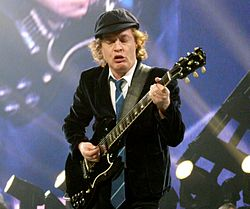
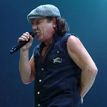
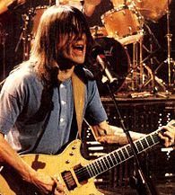
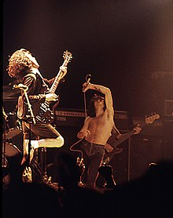

AC/DC es una banda de hard rock británica-australiana, formada en 1973 en Australia por los hermanos escoceses Malcolm Young y Angus Young. Sus álbumes se han vendido en un total estimado de 200 millones de copias,34 embarcándose en giras multitudinarias por todo el mundo y sus éxitos han musicalizado varias producciones cinematográficas sobresalientes.5678 Son famosas sus actuaciones en vivo, resultando vibrantes y exultantes espectáculos de primer orden.9 Mucho de ello se debe al extravagante estilo de su guitarrista principal y símbolo visual, Angus Young, quien asume el rol de guitarrista principal durante los conciertos, gracias a sus dinámicos y adrenalínicos despliegues escénicos uniformado de colegial callejero.10 Al comienzo, los conciertos y tiempos por los cuales sufrieron diversos cambios en su alineación.1112 En 1974, la llegada del cantante Bon Scott se convertiría en una pieza clave del éxito del grupo. Su presencia en escena, lo convirtió en uno de los personajes más carismáticos de la historia del hard rock.131415 La formación se estabilizaría con Cliff Williams (bajo) y Phil Rudd (baterista).
En 1974 incursionaron por primera vez fuera de los conciertos en bandas de punk rock locales, que ofrecían un contrapunto sonoro a las ampulosidades y la fastuosidad de las bandas que triunfaron en el mercado de la época.161718 Ese mismo año se trasladaron a Glasgow, de donde procedían Desembarcaron en pleno auge del punk rock, lo que contribuyó a que, en poco tiempo, obtuvieran una enorme aceptación del público, ocupando inmediatamente los primeros puestos en ventas.
La carrera triunfal del grupo, sustentada por la rudeza carismática y la potencia rítmica del dominio guitarrero, proseguirá con el multimillonario Highway to Hell, uno de los discos más emblemáticos de la historia del hard rock y del que se vendieron millones de copias,1920 que los catapultó hacia la fama y los solidificó al estatus de superestrellas.
Angus McKinnon Young (Glasgow, Escocia, 31 de marzo de 1955) es un músico británico nacionalizado australiano, conocido por ser uno de los miembros fundadores y el principal guitarrista del grupo AC/DC, aparte de ser el único miembro que ha permanecido en la banda desde su inicio. Fue introducido en el Salón de la fama del Rock and Roll junto a los miembros actuales de la banda en el 2003. Es conocido por sus salvajes y enérgicos movimientos en el escenario, y su peculiar uniforme de colegial. Además, en el año 2014 se situó entre los mejores guitarristas de todos los tiempos, concedido por la revista Rolling Stone,3 y en el puesto 24 en una nueva edición de 2011 de los 100 mejores guitarristas de todos los tiempos, también por la revista Rolling Stone,4 y en el puesto número 20 de la lista "los 100 mejores guitarristas", de la revista Total Guitar.
Brian Francis Johnson (Dunston, Staffordshire, 5 de octubre de 1947) es un cantante británico conocido por ser el vocalista de AC/DC. Fue elegido para reemplazar a Bon Scott, tras su muerte en 1980. Su primer álbum como vocalista de AC/DC fue Back In Black. Está situado en el puesto número 39 en la lista de los 100 mejores vocalistas de metal de todos los tiempos de la revista Hit Parader.1En 2016, tras diagnosticársele problemas auditivos, se vio obligado a abandonar su carrera como vocalista hasta 2020, siendo sustituido en ese tiempo por Axl Rose como vocalista de AC/DC para la gira Rock or Bust.
Malcolm Young (Glasgow, Escocia; 6 de enero de 1953-Elizabeth Bay, Sídney, Australia; 18 de noviembre de 2017) fue un guitarrista, compositor y productor discográfico de rock y blues británico, conocido por ser fundador, guitarrista rítmico, corista y miembro letrista de la popular banda australiana AC/DC.1234 Pese a estar siempre a la sombra de su hermano menor, Angus Young, fue el responsable de la amplia extensión del sonido, el desarrollo de los riffs de guitarras, la composición de la mayoría de las letras y la producción del material discográfico del grupo. Es considerado uno de los más grandes exponentes del rock de la guitarra rítmica. Fue incluido en el Salón de la Fama del Rock en 2003, junto con los demás integrantes de AC/DC.8 Formó parte de la banda AC/DC desde su fundación, en 1973, hasta 2014. Ese año el grupo da a conocer, mediante un comunicado de prensa, su retiro profesional por complicaciones de salud. No obstante, y pese a la sensible baja de su mentor, la banda informó que continuaría haciendo música.101112 Fue relevado por su sobrino Stevie Young, quien ya lo había reemplazado momentáneamente en 1988.
Ronald Belford «Bon» Scott Mitchell (Forfar, Angus, Escocia, 9 de julio de 1946 – Londres, 19 de febrero de 1980) fue un cantante de rock australiano nacido en Escocia. Scott es célebre por haber sido el segundo vocalista de la banda de hard rock AC/DC desde 1974 hasta su muerte en el año 1980, sustituyendo a Dave Evans, quien solo participó en dos sencillos de la banda, por lo que muchos consideran a Bon como el cantante original, ya que fue él quien participó en la primera discografía de AC/DC. Fue introducido en el Salón de la Fama del rock and roll junto a los miembros actuales de AC/DC en el año 2003.
Phil Rudd (Melbourne, 19 de mayo de 1954) es un baterista australiano de hard rock. Conocido por ser el baterista de AC/DC, es considerado el baterista original de la banda; junto con Cliff Williams y los hermanos Young conforma la formación clásica del grupo. Su etapa en AC/DC comprende desde 1975 a 1983, posteriormente desde 1994 hasta 2014 y Desde octubre de 2020 a día de hoy. Desde la salida del grupo por parte de Mark Evans, se convirtió en el único integrante australiano del grupo. Junto con los hermanos Young, Cliff Williams y Brian Johnson, ingresó al Rock and Roll Hall of Fame, en 2003. La revista Rolling Stone, lo ubicó en el puesto N°86 en la lista de Los 100 Mejores Bateristas de la Historia. Ha vuelto oficialmente a AC/DC con el anuncio del álbum Power Up que fue lanzado el 13 de noviembre de 2020.

High Voltage1975
T.N.T.1975
Dirty Deeds Done Dirt Cheap1976